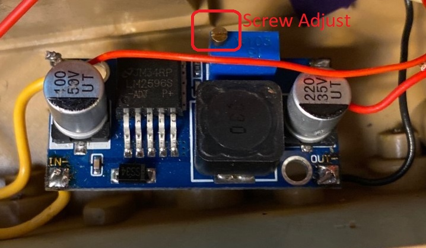

Voltage Regulator
Requirements
- The voltage regulator shall convert battery voltage (7.4 V) to 5V
- The voltage regulator shall be rated for a maximum output of 2A
- The voltage regulator shall power the nano microcontroller, the esp32 camera, the turret h-bridge and the ir emitter/detector
Discussion
The voltage regulator is a switching voltage regulator which is adjustable via a set-screw (attached to a potentiometer)
The output must be calibrated with a voltmeter to 5V before attaching it to any other electronics.

Circuit Diagram
Batt + => In +
Batt - => In -
Out + => All 5V devices
Out - => All 5V devices